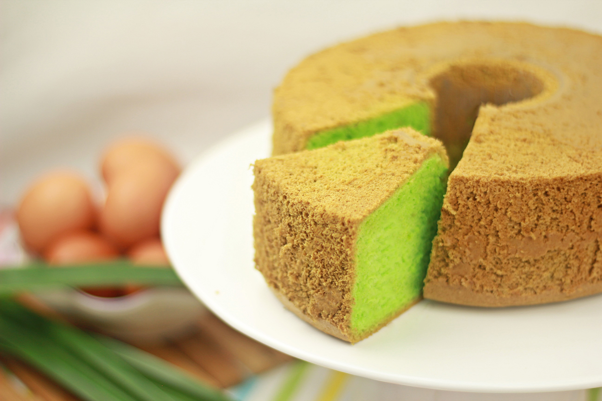

Pandan Chiffon Cake

Description
Pandan Chiffon Cake is a traditional Filipino dish that is easy to make and delicious. It is a cake that is made with pandan, sugar, eggs, and flour.
Ingredients
- 6 eggs, separated
- ¼ teaspoon cream of tartar
- ½ cup white sugar
- 8 tablespoons water
- ¼ teaspoon pandan paste
- 5 tablespoons corn oil
- 1 cup self-rising flour, sifted
Steps
- Preheat oven to 350 degrees F (175 degrees C). Grease and flour a 10-inch tube pan.
- In a large bowl, beat egg yolks and cream of tartar together until thick and lemon-colored. Gradually add sugar, beating until light and fluffy. Add water and pandan paste; beat well.
- Beat egg whites until stiff peaks form. Fold egg whites into yolk mixture. Fold in flour until just combined. Pour batter into prepared pan.
- Bake in the preheated oven until a toothpick inserted into the center comes out clean, about 30 minutes. Invert pan onto a wire rack to cool.
Back to Home